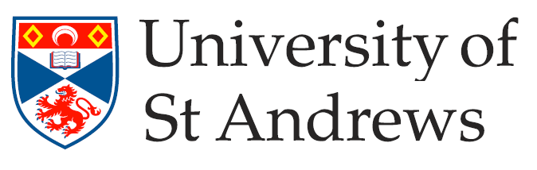

A year-long Masters degree in artificial intelligence involves theoretical, mathematical background and practice.
The course consists of modules on AI history and philosophy, courses on machine learning, natural language processing and declarative programming.
During the final project in the third term I will investigate explainable AI in ethically ambiguous problems.

The pandemic allowed for remote learning, so I took the opportunity and enrolled on a course in philosophy.
The course puts emphasis on philosophy of language, society and culture.
Part of the course consists of classics of philosophy, ethics and logic.
Additionally, there are modules on human rights and naturalistic epistemology as basis of science, and various contemporary societal issues.

At the university I study a course which, in addition to computer science modules teaches also basics of economy and project management.
The course is heavily focused on computer science with around a quarter of credits being from modules lead by the School of Business.
It is a blend of programming and computer science knowledge with essays and critical evaluation of different societal and economic concepts.
It shaped me as a programmer and enriched me as a person in many ways.
My dissertation was in machine learning and recognizing geological formation on the surface of Venus.
The project was chosen the best project in the course.
I spent 10 years in music education mastering clarinet. Other subjects included for example piano, aural training, music harmony.
It was a great challenge and, apart from music, taught me a lot of self-determination, organising my own time and shifted dramatically my understanding of being busy.
I started programming in C++ and focused on studying computer science. This involved learning algorithms, advanced Excel and databases with Access.